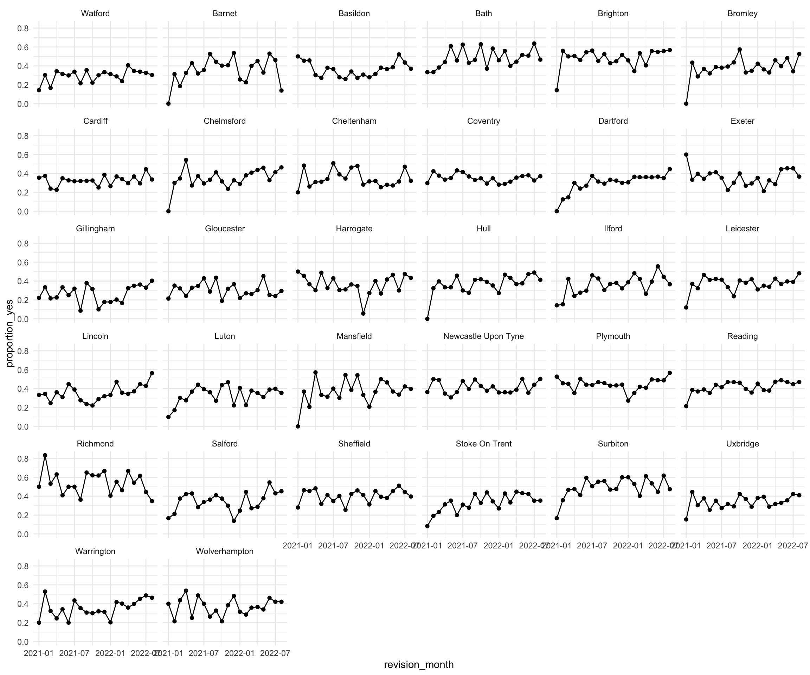
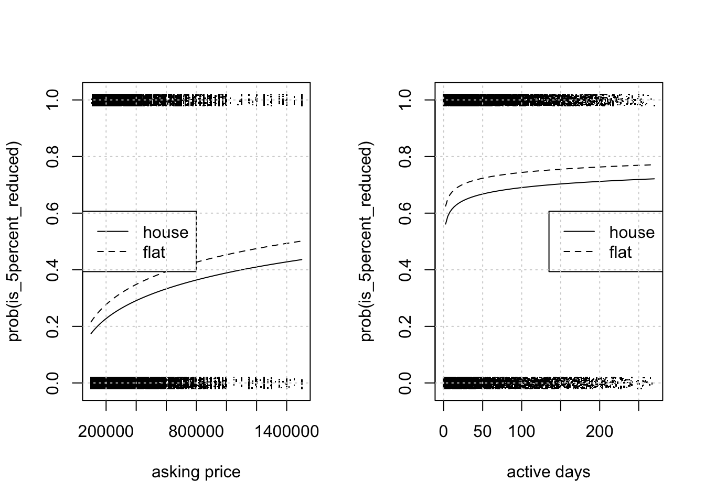

| listing_id | listing_date | listing_type | property_type | tenure | bedroom_count | location | asking_price | revision_date | active_days | is_5percent_reduced |
|---|---|---|---|---|---|---|---|---|---|---|
| 15526443 | 2021-12-16 | buy | flat | leasehold | 2 | Gloucester | 155000 | 2021-12-16 | 0 | no |
| 15528531 | 2021-12-16 | buy | house | freehold | 3 | Coventry | 225000 | 2022-01-11 | 0 | no |
| 15542023 | 2021-09-07 | buy | house | freehold | 2 | Reading | 325000 | 2021-10-16 | 0 | no |
| 15550261 | 2021-12-22 | buy | house | freehold | 3 | Sheffield | 270000 | 2022-05-11 | 0 | no |
| 15557544 | 2021-12-22 | buy | house | freehold | 4 | Warrington | 299950 | 2022-01-25 | 0 | no |
| 15565980 | 2021-12-24 | buy | house | freehold | 2 | Watford | 450000 | 2022-02-25 | 0 | no |
Introduction
In real estate universe, often listings on the market experience updates due to either changes to property specific information or due to an influence of markets.
The market influences prices of listings in major way and can lead to price increase or decrease post original advertisement.
Of interest to a real investment company are price revisions that are < 0, i.e. where prices of listings decrease. Such properties can offer immediate improvement to rental yield investment cases and shorter times to close due to comparatively lower demand.
The current analysis aspires to be able to understand where and based on what factors could price changes have happened using a historic listings dataset. This is to validate the analysis against subject matter knowledge and also expand the current understanding about price revision behaviours in the market.
A better understanding of factors associated with price reductions can help drive strategic decisions e.g. if prices are more likely to be reduced at a particular location in recent data then the market may be experiencing a contraction there.
The analysis also extends to prediction of probability of price reduction based on most informative inputs, to be able to have a mechanism where operations teams can prioritise negotiations and due diligence for such properties to benefit from the possibility of their weaker market demand.
Data
The data is derived using 2 different data files listings.csv and revisions.csv.
These files individually contain basic attributes of properties and revised prices (both increased in decreased).
These are cleaned up for sensible choices of attributes in listing data and price revisions. There are no missing values and the data values are checked for the suitability of application. The script to cleanup and prepare data can be found here.
The columns are self explanatory and the thing worth noting is that active days indicate the time elapsed from listing_date to revision_date.
We’ve converted bedroom_count to a qualitative type, since bedroom count has a highly non linear effect on prices and other attributes of property (1->2 != 2 -> 3).
Additionally, there are only a few different bedroom counts in the data and it could be analysed without treating this information as quantitative.
EDA
There are unknown values in tenure which should likely be either of the other 2 categories. The proportion of these listings is about 8% in the data so we cannot drop these listings since their share is quite large.
Additionally, most often flats are observed to be leasehold (which is sensible given that land is not definitively owned) and houses are observed to be freehold. Thus suggesting a strong correlation between tenure and property_type, which means we can drop this column from analysis and use just the property_type for both pieces of information.
| tenure | property_type | counts |
|---|---|---|
| freehold | flat | 33 |
| freehold | house | 40117 |
| leasehold | flat | 17176 |
| leasehold | house | 21 |
| unknown | flat | 456 |
| unknown | house | 4689 |
We do not find a clear relationship between asking_price and properties that have had 5% reduction in prices. It is still possible for there to be some relationship but it is perhaps confounded by location or property_type etc.
We expect that inclusion of location and other factors in the model will clarify effect of asking_price on revisions.
Similar conclusion for active_days. Due to both of these variables having a long tail, these were log transformed and for the rest of the analysis we shall apply the same treatment.
There are locations which have had a higher share of properties reduced and this is encouraging as conditional on location effect other variables may be different.
We observe some association between reductions and bedroom count and property type too.
The proportion of properties undergoing price reductions is fairly (mean) stable over time, across almost all locations. We shall not focus on the time component in the rest of the analysis for simplification.

Model
Inference
is_5percent_reduced ~ property_type + bedroom_count + log(asking_price) +
log(active_days) + locationNull deviance: 14392Model deviance: 13776Null df - Model df: 39P-Value X^2: 0Even without a formal test we know that a chi-sq distribution with n degrees of freedom should have an expected value of n. In our case (14392-13776=616) is much larger than DoF: 39, so we can reject the hypothesis that model is not significantly different from the null model with no predictors.
The chi-square p value suggests the same and we can continue analysing effects captured by the model.
Effect of asking price and active days
Both of these variables have shapes characteristic of a log transform which was applied previously. It can be observed that asking_price increasing in the lower end significantly affects the likelihood of price reduction. This could be due to the fact that on a lower baseline, a change of price can easily materialise into a 5% difference as opposed to at higher end of price where 5% reduction requires a very large £ value reduction.

active_days does not seem to strongly affect probability of price reduction across its range of values. Towards the initial range of values, the effect seems to be similar to asking_price. The small magnitude of change in probabilities makes the judgement of significance of this variable ambiguos from visual inspection of this single example.
We can test individual predictors by fitting models that drop individual predictors and computing the difference in deviance observed.
drop1(lmod, test="Chi")Single term deletions
Model:
is_5percent_reduced ~ property_type + bedroom_count + log(asking_price) +
log(active_days) + location
Df Deviance AIC LRT Pr(>Chi)
<none> 13776 13856
property_type 1 13820 13898 44.18 2.997e-11 ***
bedroom_count 5 13836 13906 59.43 1.591e-11 ***
log(asking_price) 1 13952 14030 175.67 < 2.2e-16 ***
log(active_days) 1 13809 13887 32.73 1.057e-08 ***
location 31 14132 14150 355.59 < 2.2e-16 ***
---
Signif. codes: 0 '***' 0.001 '**' 0.01 '*' 0.05 '.' 0.1 ' ' 1A formal evaluation suggests that all of the predictors are significant. This clarifies confusion around log(active_days). This is in contrast to what was observed during EDA, suggesting a confounding effect due to other variables in the model.